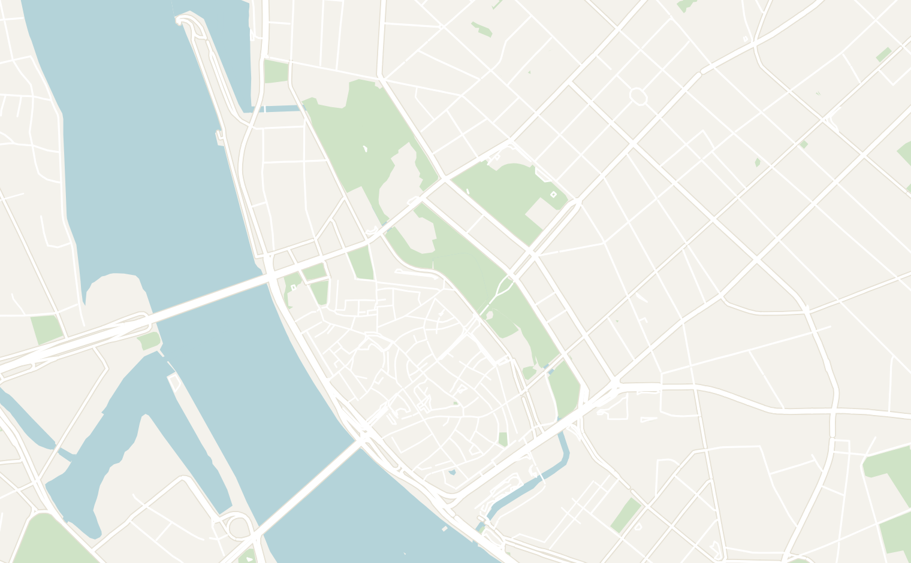
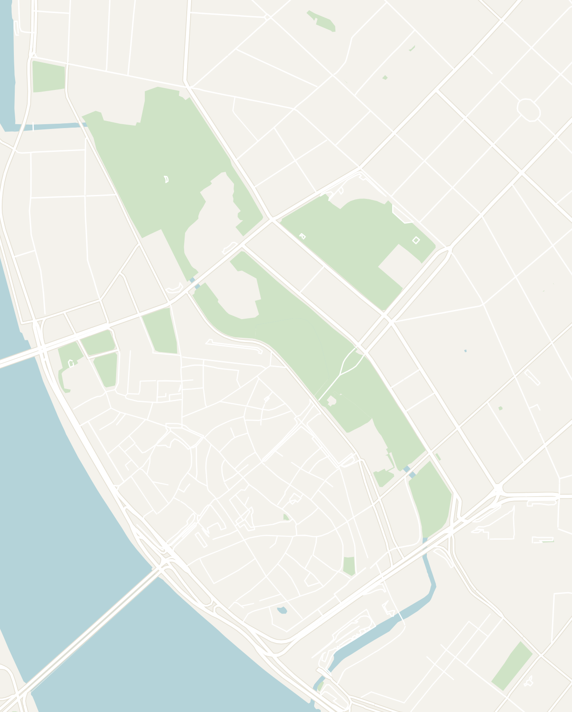

General
Latvia is a small Baltic country located in Northeastern Europe between Estonia to the north and Lithuania to the south. The main attraction in the country is its capital Riga (which is definitely way prettier than whatever you pictured as the capital of Latvia). The city has its own unique character from the other Baltic capitals with a mix of both old medieval and decadent Art Nouveau architecture. Riga genuinely surprised me and was a great place to learn about Latvia's struggle for independence, complex history as a former Soviet Republic and its on-going struggle to craft its own identity.
Most people pass through Latvia as part of a wider Baltics trip, and Riga sits right between Tallinn and Vilnius, so it's easy to string all three capitals together by bus. I'd recommend 2 days to see the old town, the Art Nouveau quarter and the Central Market at a comfortable pace.
- Getting around
- Riga — the old town and central districts are compact and walkable, with trams and buses as reliable options if you want to explore beyond the city center
- Ridesharing — Bolt, the European version of Uber, is widely available and affordable in the city
- Long Distance Buses — comfortable long-distance buses run all throughout the country. You can also easily get up to Tallinn and down to Vilnius (each around 4 hours), which makes linking the three Baltic capitals easy
- Money — the official currency in Latvia is the Euro. Latvia is great value and noticeably cheaper than Western Europe, especially at the markets and bakeries
- Food — the food is classic Baltic comfort food: rye bread, pork, smoked fish and hearty soups. Expect every meal to be very affordable and filling. They have a strong bakery culture so you'll find one on almost every corner
- Language — The primarily language is Latvian, spoken by 2/3 of the population. There is also a large Russian-speaking population. You'll have no trouble getting around with English
Riga
2 days recommendedRiga is the biggest of the Baltic capitals. The city is home to a medieval old town, the greatest concentration of Art Nouveau architecture anywhere in Europe, and a massive food market, all packed into a compact, walkable center. Riga is grittier and less polished than Tallinn, but it's cheaper and has more of a lived-in, real-city feel to it. Throw in the enormous Central Market and a genuinely fun bar scene at night, and Riga is worth 2 days to comfortably explore the city.
- Old Town — known as Vecrīga in Latvian, the medieval old town dates back to 12th century and is now the center of modern day Riga. All of the attractions are walking distance from each other making it easy to explore in a day
- House of the Blackheads — an extravagantly ornate guildhall built by a medieval merchants' brotherhood. The original was destroyed in WWII and fully reconstructed, so it looks almost brand new. This was my favorite building in Riga with it's ornate exterior to the lavish halls and rooms inside
- St. Peter's Church & Observation Deck — the main cathedral in old town Riga. The real highlight is the Observation Deck in the clock tower that has the best panoramic view over Riga's red rooftops and the Daugava river below
- Museum of the Occupation of Latvia — covers immense suffering that Latvia endured under the Nazi and Soviet occupations in harrowing detail. The country lost between 25% to 33% of it's entire population during WWII. The museum is very well done and often rated even more impactful than Tallinn's version. It is worth an hour or two to learn about the country's dark past and how it shapes Latvia today
- Three Brothers — the most iconic photo in Riga with three distinct medieval stone houses. Each represents a different architectural era: Gothic, Dutch Mannerist and Baroque, giving you three centuries of evolution in a single glance. The houses are now home to the Latvian Museum of Architecture. However, it didn't have much inside so it is only worth a stop from the outside, unless you're specifically interested in Architecture
- Cat House — this building is easy to miss, but it is one of the most charming and talked-about buildings in Riga, a custard yellow Art Nouveau building topped with two black cat sculptures with dramatically arched backs and raised tails. Worth a quick photo stop
- Riga Castle — a medieval fortress on the banks of the Daugava River, founded in 1330 by the Livonian Order and one of the most historically layered buildings in the Baltics (changing hands between the Polish, Swedish and Russians over the centuries). The castle now houses the Latvian National Museum of History and the Presidential Palace
- Riga Central Market — the largest food market in Europe, housed in four huge converted WWI hangars with open-air stalls spilling out around them. There are a lot of food stands frequented by locals. A great spot to grab a quick and affordable lunch
- The Art Nouveau Quarter — some of the most intricately designed buildings anywhere in Europe, their facades crawling with carved faces and figures. The street named Alberta iela is lined with Art Nouveau buildings, and the museum inside one of the buildings has a re-created Art Nouveau apartment worth a look to get a taste of how life was inside
- The Riga Central Market Food Stalls — go early and sample different foods across various stands. It's by far the best-value meal in the city and a great way to quickly learn about local cuisine
- Moods.lv — a stylish library-themed lounge bar in Old Town with cozy sofas and good cocktails. Good spot for a relaxed evening drink
- Skyline Bar — rooftop bar on the 26th floor of the Radisson Blu Latvija Hotel with panoramic views over the entire city. A great place to visit at sunset to admire the view
- Cinnamon Sally Backpackers Hostel — a cozy hostel with a nice common room and very social vibes. I really enjoyed my stay here


Double-tap to open in Google Maps
Other Places to Consider
Riga is usually the main stop for travelers. If you have a few extra days, here are some other places in Latvia that you can explore:
- Jūrmala — a long white-sand beach resort just west of Riga, lined with old wooden villas. It's a quick train ride from the city and a popular spot for locals during the summer
- Sigulda & Gauja National Park — located just an hour outside of Riga, this is a forested river valley dotted with medieval castles and viewpoints. Best in the fall for the colors
- Rundāle Palace — a grand Baroque palace and gardens south of Riga that is considered the most beautiful palace in Latvia